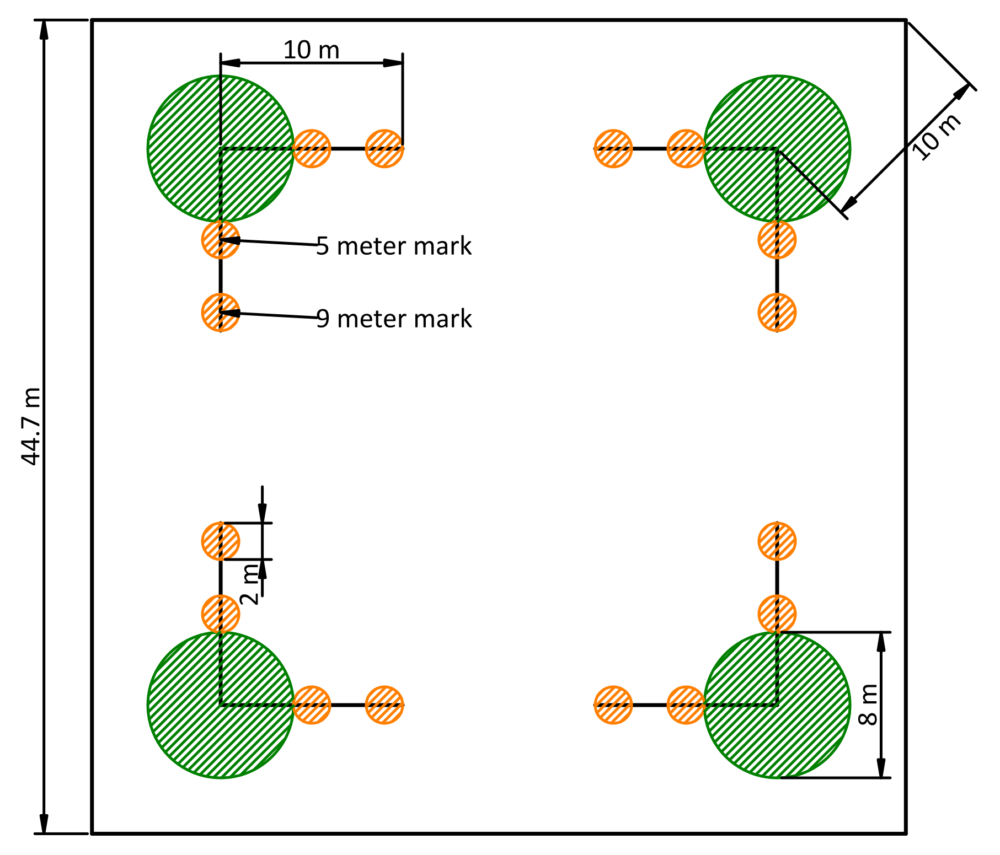
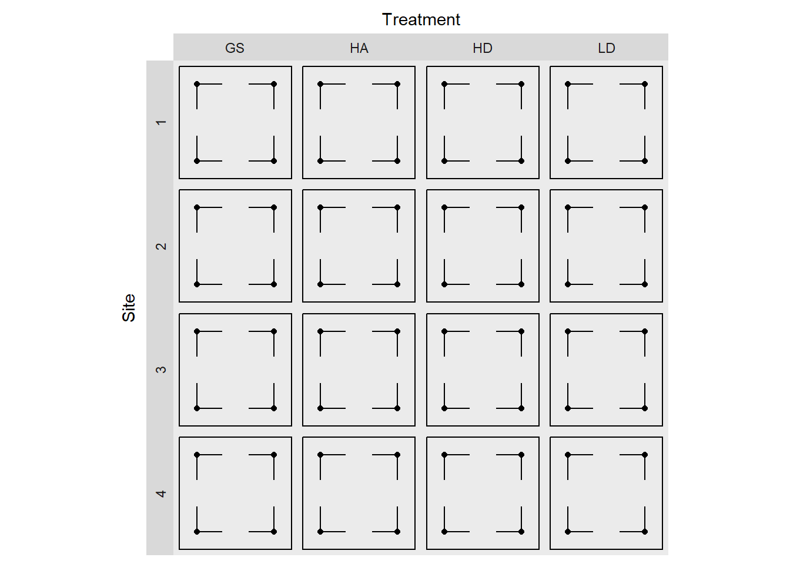
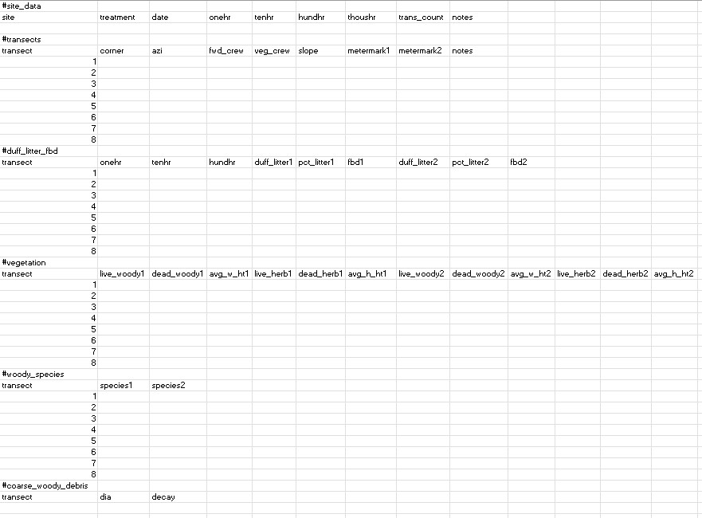

The fuel data was gathered in the spring of 2022 and 2023. The Firemon protocol was used as the basis for data collection which in turn employs the use of Brown’s transects, with the addition of duff, litter, and vegetation density sampling stations at two locations along each transect (Section 1.3). While the firemon protocol specifies a 2 meter tall imaginary cylinder for quantifying surface fuels, because our resprouting trees were continuous with the ground, we used an imaginary cylinder with a variable height, up to the tallest shrub or sprout fuels that were continuous to the ground.
Two 10-meter transects were installed parallel to plot edges at each macro plot corner. Their near ends shared a point inset 10 meters from the corner, towards plot center (Figure 1.1). Downed, woody fuels in four size classes were counted starting from the far end of the transect and each fuel size class was counted for a specified lenght of the total transect (generally longer for larger fuels).
At two stations along each transect, duff, litter, live and dead vegetation density (as height and percent cover), and fuel bed depth were assessed. Details of each of these values are described below (Section 1.3)
The notion of fuel bed depth is notably absent from the Firemon protocol, so we added it by estimating an “average” fuel bed depth within the vegetation sampling cylinder that included litter, and all downed woody debris.
Dominant (well represented) woody speices were also recorded in the vegetation cylinders.

Figure 1.1: A diagram of the fuel sampling design depicting 0.4 hectare macro plot, fuels transects, transect stations, and vegetation sub-plots. Large green circles are vegetation monitoring plots (which are mostly used for tracking species composition) and the small orange circles are transect stations where duff, litter, and live and dead vegetation density were measured.
Code
library(ggplot2)library(gt)library(dplyr)draw_sampling_design <-function() { max <-44.7# CW from bottom left xdir <-c(1, 1, -1, -1) ydir <-c(1, -1, -1, 1) corner_inset <-10/sqrt(2) centerx <- xdir * corner_inset +c(0, 0, max, max) centery <- ydir * corner_inset +c(0, max, max, 0) xend <- xdir *10+ centerx yend <- ydir *10+ centery centers <-data.frame(centerx, centery) ends <-rbind(centers, centers)# Half of the x and y coordinates of the transect ends are the same as the# center, and half are different. ends$xend <-c(xend, centerx) ends$yend <-c(centery, yend) data <- tidyr::expand_grid(treatment =c("GS", "LD", "HA", "HD"),site =factor(c(1, 2, 3, 4)), ends ) p <-ggplot(data) +geom_rect(aes(xmin =0, ymin =0, xmax =44.7, ymax =44.7),color ="black",fill =NA )+geom_point(aes(centerx, centery)) +geom_segment(aes(centerx, centery, xend = xend, yend = yend)) +facet_grid( site ~ treatment,switch ="y" ) +theme(panel.grid =element_blank(),axis.ticks =element_blank(),axis.text =element_blank(),panel.spacing =unit(0, "in"),aspect.ratio =1 ) +scale_x_continuous(position ="top") +labs(x ="Treatment", y ="Site")print(p)}draw_sampling_design()

Figure 1.2: Diagrammatic representation of the experimental design. Black points are fuel transect corners, and line segments represent individual transects. The outline represent the macro-plot boundaries.
1.1 Data entry
Data was entered using Excel and exported as a UTF-8 csv. The file format (Figure 1.3) was defined to resemble the physical datasheets as closely as possible, while maintaining data integretity and facilitating ease of input. There is one file for each macro plot (or replicate = site + treatment combination).
Each file includes sections for different tables, and these are separated by a line that contains only a single hashtag (e.g., “#duff_litter_fbd”) in lowercase letters with underscores for spaces. In Excel, the #hashtag should go in the first cell of a row, with nothing esle in the row. There should be no blank rows before or after hashtags. The table sections used don’t correlate 1:1 with physical datasheet tables. For instance, columns for “metermeark1” and “metermark2” were added to reflect the fact that initially we sampled duff, litter and vegetation density (transect stations) at 5 and 10 m, but later we moved the stations to 5 and 9 m. The “1” and “2” following repeated variable names refers to one of these locations along the transect. The function used to wrangle these data matches rows based on transect number and columns based on column names. Thus, it is possible to rearrage the rows or columns within each section as long as column names are kept consistent and data for each transect have the same transect number. Following are the section and column labels used for each section of the plot data entry form with any notes regarding their format. A complete description of the data varialbes can be found in Section 1.3.
#site_info site treatment
date
onehr
tenhr
hundhr
thoushr
trans_count notes (site level notes, should not contain commas)
phase
#transects
transect (number 1 through 8, corresponds with transect column in other sections)
corner
azi
fwd_crew
veg_crew (moved from vegetation table to here)
slope
metermark1 (location along transect of first station)
metermark2 (location along transect of second station)
notes (transect specific notes)
timestamp
#duff_litter_fbd
transect (number 1 through 8)
onehr
tenhr
hundhr
duff_litter1
pct_litter1
fbd1
duff_litter2
pct_litter2
fbd2
#vegetation
transect (number 1 though 8)
live_woody1
dead_woody1
avg_w_ht1
live_herb1
dead_herb1
avg_h_ht1
live_woody2
dead_woody2
avg_w_ht2
live_herb2
dead_herb2
avg_h_ht2
#woody_species
transect
species1 (space-delimited list of ‘significant’ species)
species2 (space-delimited list of ‘significant’ species)
#coarse_woody_debris
transect
dia
decay

Figure 1.3: Screenshot of an examle of the datasheet entry format. Each section, defined by a begining hashtag is parsed by an r function as a seperate table.
An R function is used to parse this file into individual tables. As part of this process, all the table sections whose rows have a 1:1 relationship with transects are combined into one wide table, based on the transect column.
Code
source("./scripts/test_funs.r")# file <- "../data/1_fuel_camp6_gs.csv"# This function processess one datasheet and returns three tables that can# be combined with corresponding tables from other data sheetswrangle_datasheet <-function(file) { con <-file(file, encoding ="UTF-8") lines <-readLines(con)close(con)# Remove BOM if it exists <https://stackoverflow.com/a/67906611> lines[1] <-gsub("\\xef\\xbb\\xbf", "", lines[1], useBytes =TRUE)# These are the sections I want to extract to_get <-c("site_data", "transects", "duff_litter_fbd", "vegetation","woody_species", "coarse_woody_debris" )# sections are defined by line with only a hashtage (#section) section_pattern <-"^#(\\w+).*$"# find hashtags and get the data from the next line to the line# before the next hashtag section_breaks <-grep(section_pattern, lines) section_start <- section_breaks +1 section_end <-c(section_breaks[-1], length(lines)) -1 section_names <-gsub(section_pattern, "\\1", lines[section_breaks]) sections <- purrr::map2(section_start, section_end, \(x, y) c(x, y)) |>setNames(section_names) |> (`[`)(to_get) |> purrr::map(\(x) lines[seq.int(x[1], x[2])]) |># collapse sections to strings so they can be read as if they were files purrr::map(\(x) paste(x, collapse ="\n")) |># leave empty column names so they can be removed purrr::map(\(x) readr::read_csv(x,show_col_types =FALSE,name_repair ="minimal",progress =FALSE ) ) |># Remove empty columns purrr::map(\(x) x[!names(x) %in%""])# I'm going to combine these into a wide table because each row is a transect.# Further data wrangling will require expanding the stations within transecs.# also need to make sure the rows have site data and transect ids for the# coarse woody debris. transect_data <-c("transects", "duff_litter_fbd", "vegetation", "woody_species" ) transects <- sections |> (`[`)(transect_data) |> purrr::reduce(dplyr::left_join, by ="transect") |># differentiate between transect lenghts and particle counts dplyr::rename_with(\(x) paste0(x, "_count"), ends_with("hr")) |> dplyr::mutate( sections$site_data[c("phase", "site", "treatment")],.before = corner ) |> dplyr::select(-transect) coarse_woody_debris <- sections$coarse_woody_debris |> dplyr::mutate( sections$site_data[c("phase", "site", "treatment")],.after = transect ) |> dplyr::left_join( sections$transects[c("transect", "corner", "azi")] ) |> dplyr::select(c(phase, site, treatment, corner, azi, dia, decay)) plots <- sections$site_data |># differentiate between transect lenghts and particle counts dplyr::rename_with(\(x) paste0(x, "_length"), ends_with("hr"))# I'll add a check to make sure that all transects and plots are uniquewarn_duplicates(transects, phase, site, treatment, corner, azi)warn_duplicates(plots, phase, site, treatment)# Final output with three tables. These will be combined with corresponding# tables from other datasheets.list(plots = plots,transects = transects,coarse_woody = coarse_woody_debris )}# Here I hard code the source directory for the input csvsdata_dir <-"../data"# Combine fuels data for each plot## This function expects all fuel datasheets to begin with "fuel" and end with# "csv". It loads all matching files in a given folder and returns the same# tables as `wrangle_datasheet`, but for all plots combined.combine_fuels_datasheets <-function(data_dir) { files <-list.files(data_dir, pattern ="^\\d_fuel.*csv$", full.names =TRUE) sheets_list <- purrr::map(files, wrangle_datasheet) table_names <- purrr::set_names(names(sheets_list[[1]])) purrr::map(table_names, \(x) purrr::list_rbind(purrr::map(sheets_list, x)))}# this is how to pivot station data to longer format# d |># tidyr::pivot_longer(# cols = !c(site, treatment, corner, azi),# names_to = ".value",# names_pattern = "(\\w+)[12]$"# )
The resulting data looks like this:
wrangle_datasheet("../data/1_fuel_waldon_gs.csv")
Joining with `by = join_by(transect)`
$plots
# A tibble: 1 × 10
site treatment date onehr_length tenhr_length hundhr_length thoushr_length
<chr> <chr> <chr> <dbl> <dbl> <dbl> <dbl>
1 waldon gs 3/15/… 2 2 4 10
# ℹ 3 more variables: trans_count <dbl>, notes <chr>, phase <chr>
$transects
# A tibble: 8 × 35
phase site treatment corner azi fwd_crew veg_crew slope metermark1
<chr> <chr> <chr> <chr> <dbl> <chr> <chr> <dbl> <dbl>
1 prepct waldon gs n 135 jf ac 4 5
2 prepct waldon gs n 248 jf ac 19 5
3 prepct waldon gs w 45 dr dr 8 5
4 prepct waldon gs w 135 dr dr 20 5
5 prepct waldon gs s 45 dr jf 5 5
6 prepct waldon gs s 315 dr jf 5 5
7 prepct waldon gs e 225 dr jf 8 5
8 prepct waldon gs e 315 dr jf 13 5
# ℹ 26 more variables: metermark2 <dbl>, notes <chr>, timestamp <lgl>,
# onehr_count <dbl>, tenhr_count <dbl>, hundhr_count <dbl>,
# duff_litter1 <dbl>, pct_litter1 <dbl>, fbd1 <dbl>, duff_litter2 <dbl>,
# pct_litter2 <dbl>, fbd2 <dbl>, live_woody1 <dbl>, dead_woody1 <dbl>,
# avg_w_ht1 <dbl>, live_herb1 <dbl>, dead_herb1 <dbl>, avg_h_ht1 <dbl>,
# live_woody2 <dbl>, dead_woody2 <dbl>, avg_w_ht2 <dbl>, live_herb2 <dbl>,
# dead_herb2 <dbl>, avg_h_ht2 <dbl>, species1 <chr>, species2 <chr>
$coarse_woody
# A tibble: 20 × 7
phase site treatment corner azi dia decay
<chr> <chr> <chr> <chr> <dbl> <dbl> <dbl>
1 prepct waldon gs n 135 9 5
2 prepct waldon gs n 135 13 2
3 prepct waldon gs n 248 48 3
4 prepct waldon gs n 248 10 5
5 prepct waldon gs w 45 16 5
6 prepct waldon gs w 45 15 5
7 prepct waldon gs w 45 14 5
8 prepct waldon gs w 45 14 5
9 prepct waldon gs w 135 32 3
10 prepct waldon gs w 135 12 4
11 prepct waldon gs w 135 30 5
12 prepct waldon gs s 45 28 4
13 prepct waldon gs s 45 42 5
14 prepct waldon gs s 315 26 3
15 prepct waldon gs e 225 15 4
16 prepct waldon gs e 225 13 3
17 prepct waldon gs e 225 18 5
18 prepct waldon gs e 225 34 3
19 prepct waldon gs e 315 26 4
20 prepct waldon gs e 315 12 5
While the wide format for the transect data is not ideal, it is convenient because it reduces the number of tables we are dealing with. This will require extra work at analysis time to expand the data variables which are followed by a “1” or “2”, which represent different stations (Section 1.3) on the same transect. To analze these data, they will first need to be pivoted into a longer format, where the station (1 or 2) becomes an explicit column.
1.2 Data variable descriptions
The following is a descripton of the data variables for each of the tables in the data list. So, the $plots heading refers to the table found in data$plots. This data structure is subject to change, but for now, has 3 tables. $plots has plot level data including the lengths of transects (which are the same across all transects, but included for clarity). $transects contains all the fuel data associated with a given transect, including both sampling stations, in wide format (one row for each transect). Finally, $coarse_woody contains coarse woody debris in a long format (multiple rows for each transect).
1.3 Station sampling cylinder
Reference is made the station sampling cylinder below. It is an imaginary, vertical cylinder with a radius of 1 meter and a variable height equal to the maxiumm height of sprout or shrub vegetation within the cylinders radius. There are two sampling cylinders on each transect and their centers are defined by the transects’ two metermarks. Duff, litter, and fuel bed depth in addition to the vegetation measurements, are all recorded within these cylinders.
1.4$plots
Variable
Description
site
treatment
date
onehr
Distance from end of transect for which 1-hr fuels were counted
tenhr
Distance from end of transect for which 10-hr fuels were counted
hundhr
Distance from end of transect for which 100-hr fuels were counted
thoushr
Distance from end of transect for which 1000-hr fuels were counted
trans_count
number of transects on macro plot
notes
phase
Phase of experiment: prepct or postpct
1.5$transects
Variable
Description
phase
same as for plots
site
One of four different sites: whiskey, waldon, waldos, and camp6
treatment
One of HD=High density, dispersed retention, LD=Low density dispersed retention, MD=Medium densty dispersed retention, HA=High density aggreagated retention, GS=Group selection opening (1 ha, centered on plot)
corner
One of n,s,e,w for “diamond” plost and one of ne, nw, se, sw for “square” plots
azi
actual azimuth from corner to end of fuel transect, deg
fwd_crew
Initials of person performing fuel counts and measuring litter, duff, and FBD
veg_crew
Initials of person estimating vegetation cover
slope
slope in percent, measured with clinometer
metermark1
locantion along transect of first veg. station m
metermark2
locantion along transect of first veg. station m
notes
Transect specific notes
onehr
Count of down woody fuels <0.6 cm for the lenght of the 1-hr transect, redwood leaflets less than about 2 mm were not counted as one hour fuels
tenhr
Count of down woody fuels >= 0.6 and < 2.5 cm
hundhr
Count of down woody fuels >= 2.5 and < 8 cm
duff_litter1
Combined duff and litter depth from a representative location within a 1-meter radius circle centered at metermark, cm
pct_litter1
Percent of duff_litter depth compose of litter: percent
fbd1
Estimated average height of litter and downed woody debris within the sampling cylinder, 1 m radius, centered at metermark
duff_litter2
pct_litter2
fbd2
live_woody1
Total projected ground cover of all live woody plant parts within 1-meter-radius sampling cylinder of height equal to the height of the shrub or sprout vegetaion within the cylinders radius, 0-100 percent
dead_woody1
Total projected ground cover of all dead woody plant parts connected to live or standing dead plants, within the sampling cylinder 0-100 percent
avg_w_ht1
Average maximum height of all live and dead woody plants in sampling cylinder (see Estimating Height in Firemon protocol)
live_herb1
Total projected ground cover of live herbs in the sampling cylinder
dead_herb1
Total projected ground cover of dead herbs in the sampling cylinder
avg_h_ht1
Average maximum height of live and dead herbs in the sampling cylinder
live_woody2
dead_woody2
avg_w_ht2
live_herb2
dead_herb2
avg_h_ht2
species1
Dominant woody species within sampling cylinder, each species is assumed to occupy an equal portion of volume, under-represented species are ignored
species2
1.6$coarse_woody
Variable
Description
site
treatment
corner
azi
dia
decay
Decay class 1-5, 1=Fine branches still present, 2=Some branches and bark missing, 3=most branches and much bark missing potentially minor decay, 4=Significant decay, 5=Almost completely rotten